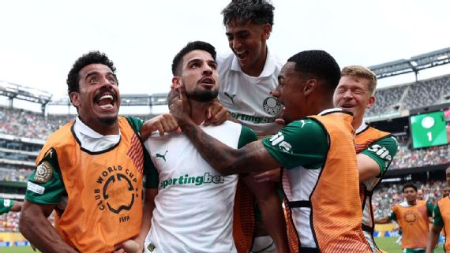
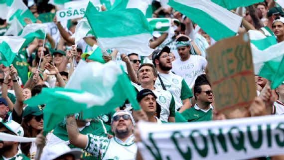

'Furacão Flaco' devasta Al Ahly, Palmeiras vence primeira no Mundial e encaminha classificação

Após um início ruim, o Palmeiras deslanchou no segundo tempo e venceu o Al Ahly por 2 a 0, nesta quinta-feira (19), no MetLife Stadium, em Nova Jersey, pela 2ª rodada do Mundial de Clubes da Fifa. 35.179 torcedores estiveram presentes na arena, segundo a organização.
O Verdão não começou bem a partida, levando um "calor" dos egípcios (e do termômetro) na etapa inicial. Na volta do intervalo, porém, Abel Ferreira mexeu bem no Alviverde, colocando o atacante Flaco López para decidir o jogo.
E, em tarde de partida interrompida por "alerta climático severo" em East Rutherford, o "Furacão Flaco" devastou o adversário.
Primeiro, ele atrapalhou a defesa do Ahly em lance de bola parada e viu o centroavante Abou Ali marcar contra, abrindo o placar para o Alviverde.
Pouco depois, López recebeu assistência perfeita de Maurício em contra-ataque mortal e guardou o seu, resolvendo de vez o jogo para os palestrinos.
O argentino ainda teve mais uma boa chance de cabeça para fazer seu doblete, mas a finalização acabou passando por cima do travessão.
A vitória é importantíssima para o Palmeiras, que, no momento, lidera sua chave com quatro pontos em duas partidas.
Ainda nesta quinta, a rodada do grupo A ficará completa com o confronto entre Porto e Inter Miami, às 16h (de Brasília), no Mercedes-Benz Stadium, em Atlanta.
A classificação do Verdão para as oitavas, aliás, fica bem encaminhada, já que, na última rodada, Porto e Al Ahly se enfrentam, e um deles perderá pontos.
Com isso, até mesmo um empate com o Inter pode ser suficiente para o time brasileiro, a depender do resultado do duelo entre Miami e os Dragões nesta quinta.
O jogo
Sob fortíssimo calor em Nova Jersey, o Al Ahly começou o jogo ligeiramente melhor, tentando explorar jogadas nas costas do lateral-direito Giay. O Verdão, por sua vez, tentava não se desgastar muito, preferindo marcação atrás da linha da bola e indo nos contra-ataques com Vitor Roque e Estêvão.
Em uma das escapadas da joia palestrina, aos 18 minutos, o Verdão criou a primeira chance clara da partida: o camisa 41 arrancou pela direita, deixou dois marcadores na saudade e bateu rasteiro, mas a bola saiu tirando tinta da trave egípcia.
A partida seguiu sem muitas emoções até os 38 minutos, quando a torcida palestrina levou um susto enorme: Raphael Veiga entrou forte em dividida e levou cartão vermelho direto do árbitro inglês Anthony Taylor. O meia palmeirense ficou revoltado, implorando ao juiz que reconsiderasse sua decisão.
O VAR concordou com o "argumento" de Veiga e chamou Taylor para revisar o lance. O britânico concordou com a chamada da arbitragem de vídeo e trocou o vermelho por amarelo, deixando o camisa 23 apenas com uma advertência.
Na avaliação de Renata Ruel, analista de arbitragem da ESPN, o VAR corrigiu bem:" O lance do Veiga é para amarelo, apesar de ser no limite. Ele está com a perna recolhida e não faz movimento adicional, tem intensidade média, apesar de o pé estar alto", justificou.
Exaustos mesmos após pausa para reidratação, os jogadores dos dois times foram para os vestiários com a língua de fora, já que o sol não dava trégua no MetLife Stadium.
Na volta do intervalo, Abel Ferreira mexeu no Palmeiras: sacou Vitor Roque e Raphael Veiga e colocou Flaco López e Maurício.
Logo no primeiro ataque palestrino, Piquerez abriu bem na esquerda e fez excelente cruzamento rasteiro para López, que furou e desperdiçou uma oportunidade claríssima para os brasileiros.
Mas o Al Ahly "ajudou" logo na sequência, e o Verdão finalmente marcou seu primeiro gol no Mundial em jogada da bola aérea. Após cruzamento para a área, o centroavante Abou Ali errou o corte e mandou contra o próprio patrimônio, deixando o goleiro El Shenawy sem chance de defesa. Alívio no lado alviverde das arquibancadas, com a torcida palmeirense soltando um grito tão alto que provavelmente foi ouvido em Manhattan, a quilômetros do estádio.
As entradas de Maurício e Flaco melhoraram bastante o Alviverde, e isso ficou ainda mais evidente aos 14 minutos: excelente contra-ataque palestrino, passe na medida do meia e batida do centroavante argentino na saída do goleiro para fazer 2 a 0 e tranquilizar de vez a massa palmeirense.
Logo depois do tento de López, a partida foi interrompida pela organização do Mundial devido a um "alerta climático severo" emitido pelo Serviço Nacional de Meteorologia dos Estados Unidos. A paralisação durou mais de 45 minutos, e os times tiveram que ir para os vestiários e regressar depois, fazendo novo aquecimento.